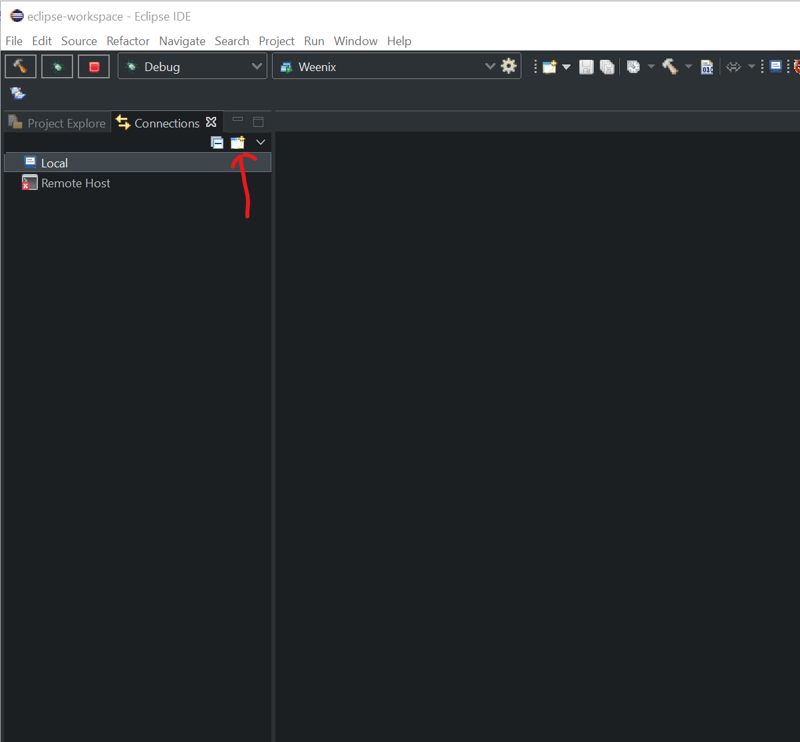
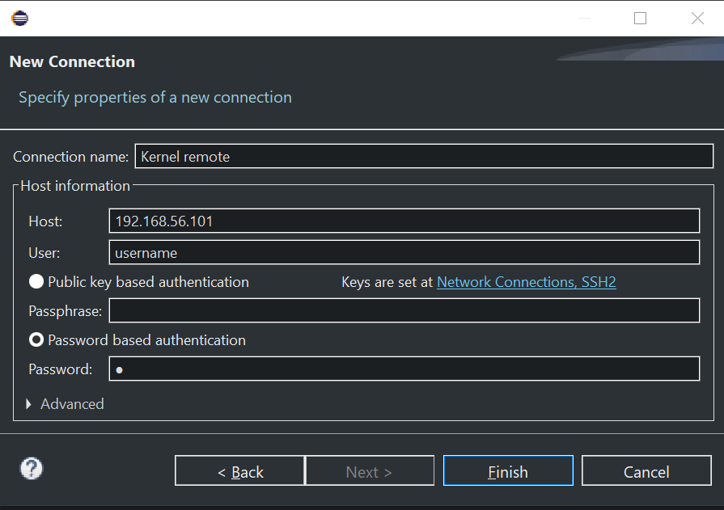
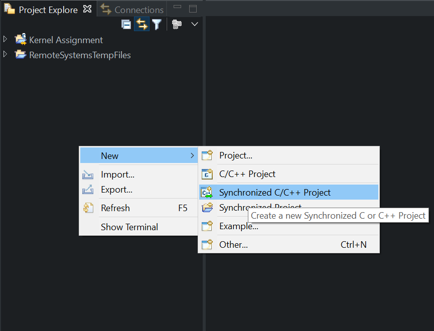
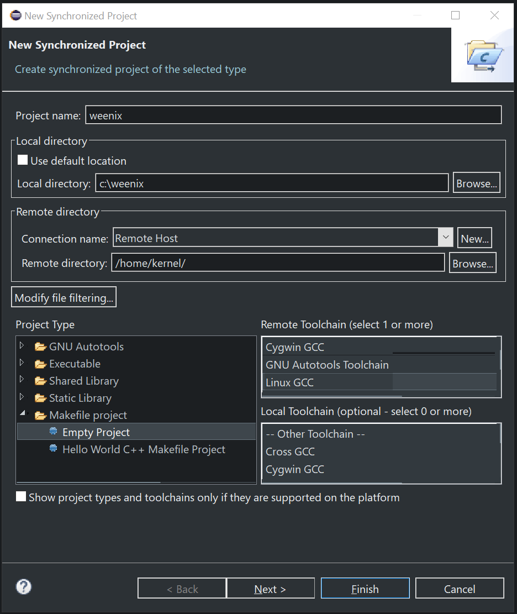
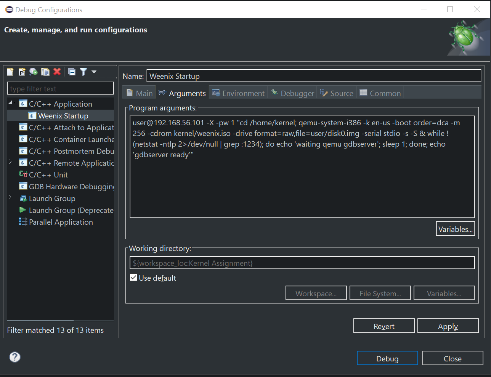
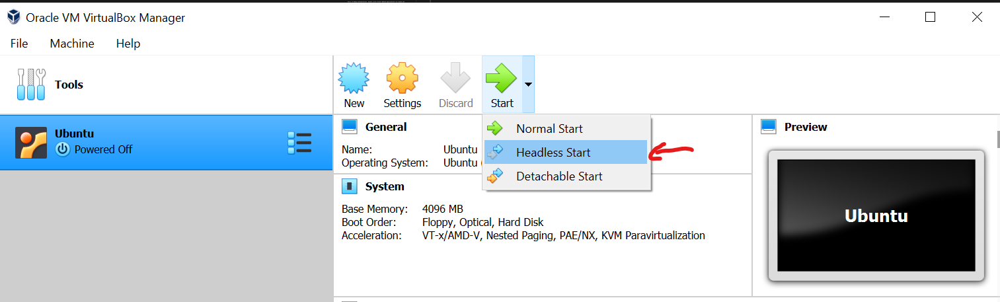
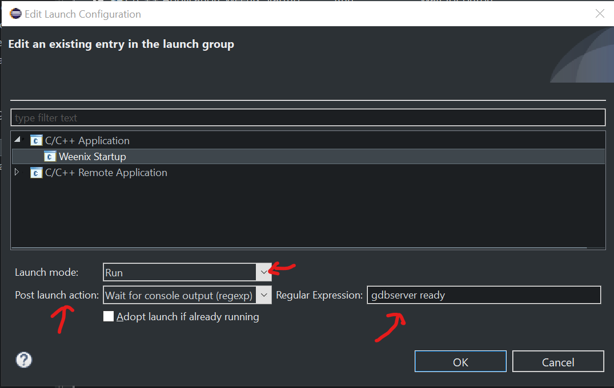
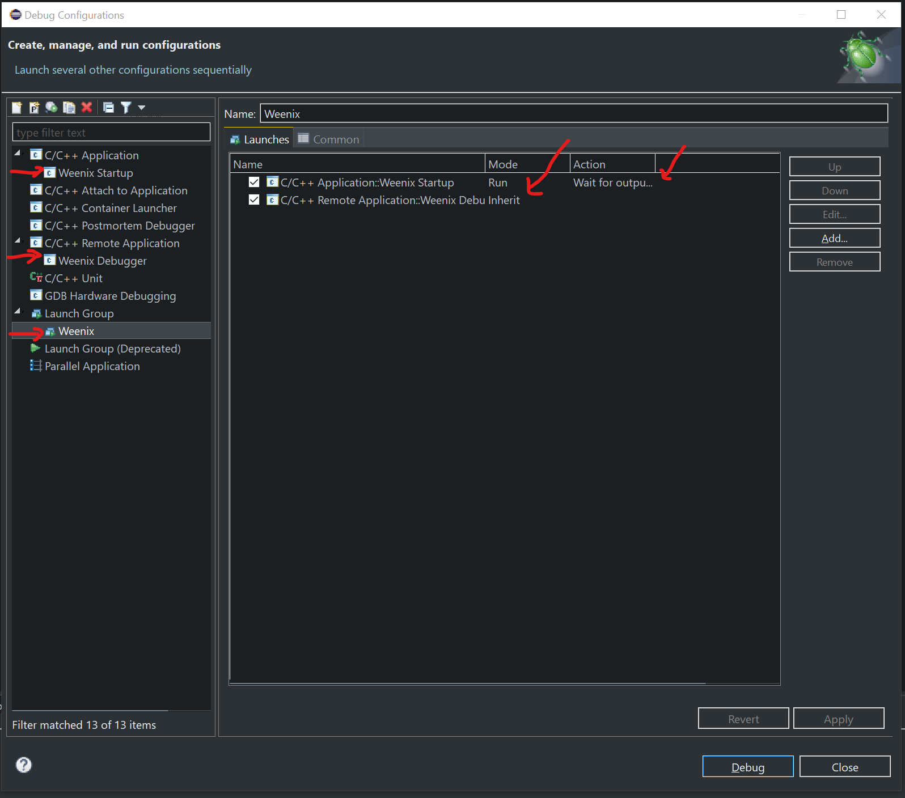
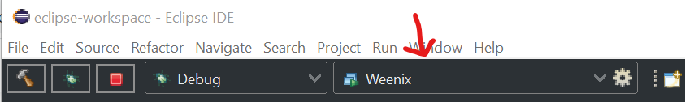
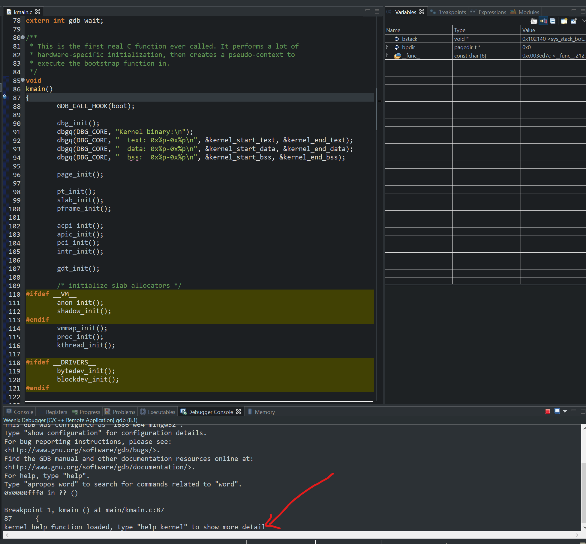

this document shows how to remotely develop kernel (Makefile Project) through Eclipse with detail configuration and a example of Weenix
1. Why Painless
Are you suffering from following?
- Lag in virtual machine, slow GUI
- Blur, Resolution adaptation
- Lots of windows while debugging
- Frequent switching between host and client system
- Lack of modern development tools
- Tired to set/unset Debug flag
- …
now, you should try this new method to start your remote development experience
build, debug, All in One Key
2. Basic Idea
use the latest IDE to code while building or debugging remotely in virtual machine or host
3. Prerequisite
- The latest version of Eclipse IDE for C/C++ Developers (2020-03 R currently)
- Kernel development system with configured SSH server (for weenix, Ubuntu 16.04 32bit) !!! Don’t forget enable X11 forwarding
- Stable Internet connection between host system and you (for virtual machine, Host-only will make sure it)
- plink (a command-line interface to the PuTTY back ends, you can find it in PuTTY package)
- X11 Server (For windows, Xming works well for me)
4. IDE Setup
For automatically sync all files between remote folder and yours, you should setup a Synchronized Project in your Eclipse.
Wait! Before create new project, two things you need to do.
- Install Parallel Tools Platform for your Eclipse to get project template of Synchronized Project
- In Eclipse, Help - Install New Software… to open Install Window
- In *”Work With”, choose corresponding version release url (*“2020-03 - http://download.eclipse.org/releases/2020-03"**)
- Waiting download information
- In following multiple choice box, expand “General Prupose Tools” and check Parallel Tools Platform (may change in the future, Please refer your eclipse documentation about “Eclipse PTP” )
- Get your kernel project in your remote system
- Any way you want. Git, SVN, Copy and Paste and etc.
- Configure SSH
- In Eclipse, find *”Connections”* tab close to *”Project Explore”* and switch to it
- Click “new connection” icon at right top in this tab
 - Choose *”SSH”* in pop window and click “next”
- Fill all connection information field, and click “finish”
 - Test it!
Now, it’s time to create your Synchronized Project.
In Eclipse, find *”Project Explore”* and switch to it. Right Click in blank area, Choose *”New - Synchronized C/C++ Project”*

Enter your project name any you want.
In Remote directory, select *”connection name”* with the SSH connection name you just create. Then Click *”Browse*” followed. Now you will see your remote folder in pop window, select your project folder.
In Project Type, Choose *”Makefile project”, and Only select *”Linux GCC” in *”remote Toolchain”.

Last, Click Finish to create the project
After shortly Sync, you should see all your project file in *”project explore”
Up to now, all things look well, you could build your project through simply click build button
5. Remotely Launch and Debug
First, we will use plink to connect to our remote system and excute qemu to load our kernel and wait it launch successfully.
Launch
In Eclipse, find *”Debug Configurations”* and double click *”C/C++ Application”* to create new configuration, which I set name “Weenix Startup”
In Main tab, choose the right project and browse right path of plink for C/C++ Application
Switch to Arguments tab, paste following code (of course, you can write one for yourself, it just like shell)For Weenix only: this part of codes just like what did in weenix script
{username}@{remote IP} -X -pw {PASSWORD} "cd {remote project path}; qemu-system-i386 -k en-us -boot order=dca -m 256 -cdrom kernel/weenix.iso -drive format=raw,file=user/disk0.img -serial stdio -s -S & while !(netstat -ntlp 2>/dev/null | grep :1234); do echo 'waiting qemu gdbserver'; sleep 1; done; echo 'gdbserver ready'"Replace {username}, {remote IP}, {PASSWORD} and {remote project path} correctly.
If you need any extra argument for qemu you can modify
*”qemu-system-i386 -k en-us -boot order=dca -m 256 -cdrom kernel/weenix.iso -drive format=raw,file=user/disk0.img -serial stdio -s -S”* correspondingly
Plink will forward qemu window to you! So you even can use *”headless start”* to start your VM to save more system resource or Even ubuntu server!

For more detail, Please refer documentation of PlinkDebug
Still in Debug Configurations, double click *”C/C++ Remote Application”* to create new configuration, which I set name “Weenix Debugger”
In Main tab, choose the right project and write *”kernel/weenix.dbg”* for C/C++ Application, or you can “Search Project” if you build project and sync before
In Debugger tab, Stop at “kmain” (of course, you can write others you want) and make sure GDB command file is default value “.initgdb” if you want to use weenix kernel debug commands (we enable it later)
Switch to Source tab, Click “Add” and choose “Path Mapping”. Give any mapping name you want and write your remote project folder and local project folder correctly. it will make sure GDB can find symbol file while debugging.Combination
Now, we just need combine them. Still in Debug Configurations, double click *”Launch Group”* to create new configuration, which I set name “Weenix”
Click “Add” to add our Weenix Startup and Weenix Debugger. Make sure Launch mode is Run when you add Weenix Startup. Post launch action is Wait for console output (regexp) and Regular Expression is *”gdbserver ready”* (if you use my code in step 5.1)


All Set! just modify default debug configuration is Weenix
Try it, all thing will work automatically (Don’t forget to start your X11 server!)
6. (Weenix Only) Where is my weenix kernel debug commands?
What? Why can’t I use kernel in debugger console?
Cause we didn’t source commands file when gdb start.
Now, we create a .initgdb (keep same name in step 5.2) in the local project folder
paste following code
python sys.path.append("./python")
b kmain
comm
source kernel/main/gdt.gdb
source kernel/mm/pagetable.gdb
source kernel/mm/page.py
source kernel/mm/memcheck.py
source kernel/mm/slab.py
source kernel/proc/kthread.gdb
source kernel/proc/proc.py
source kernel/util/debug.py
source kernel/util/list.py
source kernel/vm/vmmap.gdb
echo kernel help function loaded, type "help kernel" to show more detail
endit will break kernel in kmain and load all commands file, if all things right you will see “kernel help function loaded, type “help kernel” to show more detail” in your gdb console

7. More
- The tty output from qemu will be put in console. Cause there may be muliple console windows, you may need to switch to right one.
- colored output, if you want, *”ANSI Escape in Console”* is good for that in plugin market. No config needed!